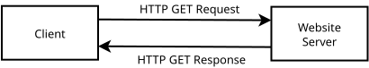

Homework 3: Proxy Server / Web Cache (50 Points)
Chris Tralie
- Description / Overview
- Getting Started / What To Submit
- Part 1: Create A Basic Proxy Server (25 Points)
- Part 2: Filtering/Caching (25 Points)
- Extra Credit
Learning Objectives
- Implement internet communication using sockets in C
- Manage multiple clients using multithreaded programming paradigms (e.g. threads, mutexes)
- Implement basic filtering of web content
- Implement a basic web cache
Description / Overview
We saw in homework 2 how to craft HTTP requests and receive HTTP responses as a web client, as shown in the block diagram below:
We're now going to create something called a proxy server, which acts as a middleman between an HTTP client request and an HTTP server; that is, instead of sending a request directly to a server, a client sends a request to the proxy server, which makes the request to the server on behalf of the client, as show in the block diagram below:
This enables the following important applications:
- Privacy / bypassing blocked content: If a client would be blocked from accessing content from a particular server, but it can connect to a proxy that is able to make the request, then the client can suddenly get service to the blocked content. The proxy can also mask the client's identity.
- Blocking content: On the other side of the spectrum, a proxy server can modify HTTP responses from the server or block them entirely, acting itself as a web filter. For instance, this is how a K-12 school might deploy a proxy server.
- Web caching: A proxy server can maintain a cache of requests and their associated responses, which can cut down on lag time in getting a response to a client, particularly if the proxy server is geographically closer to the client than the website server is to the client.
Once students have implemented a basic proxy server, they will explore simplified version of latter two applications in the final part of this assignment.
Getting Started / What To Submit
You can obtain the starter code for this assignment by using git:
You will be editing the file server.c, which is the only file you will submit to canvas. You can build with make and run as /server.
You should also have a look at http.h, util.h, and arraylist.h to see what provided methods are available to you. This will save you time and prevent you from having to reinvent the wheel.
Programming Tasks
Below I'll walk you through an implementation of the proxy server. Be sure to test small chunks of code very often! You may also want to use the file test.c to test small C code snippet ideas in a simpler setting than the server/client threads.
Part 1: Create A Basic Proxy Server (25 Points)
In this section, you will create a multithreaded proxy server that is fully functional, to the point where it can make homework 2-style command line HTTP GET requests through the server, and it can even display HTTP web pages in a web browser if the web browser's proxy points to it.
Your Task
Fill in code in server.c to establish a multithreaded proxy server. For each incoming client, perform the following sequence of steps:
- Read the HTTP request into a buffer, as you would have in homework 2
-
With the help of the HTTPHeader class, modify the request to use HTTP 1.0, and ensure that there is a
Connection: closefield - Send the modified request off to the server and receive the response into a buffer
- Send the response back to the client and close the connection
Testing
I've setup a client in the file tester.c for you to make it easy to test your proxy server (though you should also try it out for fun with firefox once you get past the basics). This client will send out HTTP requests that are stored in files that you can modify. I've already provided a number of test cases in the tests/ folder in the repository. For instance, if you run
This will make a request to your proxy server to retrieve index.html on http://www.ctralie.com, and it will save the entire HTTP response (including the HTTP header!) that your server sends back to a file called out.txt.
Hints/Tips
- Have a look at this simple but fully functional example of how to create a multithreaded socket server in C. Feel free to use some of this code as a template for your proxy server (though you will have to modify it quite a bit).
-
Good encapsulation is key here to keep your code organized and easy to debug, so split your code up into small methods that do specific tasks, and test the heck out of each one individually. For instance, you can reuse a good chunk of your code from homework 2 to do the
GETrequests, but you should probably put that in its own method. -
HTTP Header: Take advantage of the
HTTPHeaderclass (seeHTTPHeader.h) to parse and modify HTTP requests, in conjunction withArrayListbuffers. This will make your life a lot easier. Have a look at example usage inhttpheadertest.c.
For Fun: Connecting Firefox To Your Server
You can tell firefox on your computer to route HTTP traffic through your server. First, search for the word "proxy" in settings:
Then, check off "manual proxy configuration" and under "HTTP proxy" put in 127.0.0.1 for your IP address, as well as the appropriate port:
When you visit a page, be sure to put in http:// explicitly instead of https://; otherwise, most pages these days will default to encrypted https. For example, you need to explicitly type in http://www.ctralie.com for HTTP traffic from my web site to hit your proxy server.
Of course, you can also expose your proxy server to the web and route traffic through it remotely if port forwarding, etc is configured on your router.
Part 2: Filtering/Caching (25 Points)
In this section, you will expand the robustness and specific options of the proxy server in several ways
Part 2a: Error Messages (5 Points)
Your Task: To make your proxy server more user friendly, handle the following errors:
- If there are any errors opening sockets or receiving information, send back an Error 500 "Server Error" response
-
If the request includes some action other than
GET, send back a 501 "Not Implemented" response. You can test this one by using the requesttests/put.txtprovided with the code. - If there is an error parsing the HTTP request, send back an error 400 "Bad Request" response
Part 2b: Enforcing RegEx Block Patterns (5 Points)
Your Task: Before sending out a response, check to see if the Content-Type is text/html. If so, scan the body for any matches of the regular expression contained in the blockpattern string in the command line arguments. If there is a match, then send back a 401 "Unauthorized" response.
For example, if you run the server with
and then you run the tester with
Then it should block this page.
Hint: Have a look at the documentation at this link to see how to evaluation regular expressions in C.
Part 2c: Basic Web Cache (15 Points)
In this part of the assignment, we will maintain copies of files that the proxy server has already retrieved so that it doesn't have to make the same GET requests more than once, which can significantly reduce internet traffic. We'll ignore timestamps and time to live, though you can tackle this in extra credit if you'd like.
Your Task:
For each <host>:<path> request, create an md5 hash of a string of the form "<host>:<path>" (An md5 hash is a function from an arbitrary-length string to a 16-byte (32 hex digit) string). Before you make an HTTP request, check to see if a file of the form "cache/<md5 hash code>" exists. For example, the response for the page /index.html at host www.ctralie.com would be cached to the file cache/976c6e21dd0e8d89c6236ac9d6771a1b. If this cache file exists, bypass the HTTP request/response from the host and instead send back the contents of this cache file to the client. Otherwise, make the HTTP request/response as normal, but be sure to save the response to the cache file for future requests.
NOTE: Some hashes may collide, but you can neglect that for this assignment, unless you do the extra credit.
NOTE ALSO: For full credit, you should use mutexes when writing to and reading from files to avoid race conditions in case two threads make the same request.
Hints
- Have a look at
test.cto see an example of how to compute md5 hashes of strings - If you query the same file more than once while your server is running, be sure that it hits the cache every time after the first request. This can even work across different runs of the server since they're stored in files external to the server's virtual memory session.
-
For fun, if you use the server with firefox, try visiting several pages that are linked to each other, each with hard refresh (
CTRL+SHIFT+R). This should load all of the files on that page from scratch and cache them on your server. Then, go into airplane mode and clear your web browser's cache. You should still be able to visit all of the pages you just visited!
Extra Credit
There are a few things you can do to spice this up even more:
- (+1 points) Though they are rare, md5 hash collisions happen. Devise a way to deal with this in your cache.
- (+2 points) Check to see if the cached copy is stale before using the cache. You can do this by sending a lightweight HTTP HEAD request and checking the
Last-Modifiedfield and comparing it to the date that the copy in the cache was last modified. If theLast-Modifiedis more recent than that in the cache, then you will have to make an HTTP GET request after all and update the cache.Hints: The
parseDatemethod inutil.hshould help you. I'd also recommend using theHashMapclass to quickly look up host:path/date pairs (alternatively, you can parse parts of the cached files to find this info). -
(+2 points) Sometimes a plaintext HTTP response comes back in a compressed format like gzip, which will cause the block filtering step to fail. To address this, figure out how to ungzip the text/html data before running the blocked regular expression